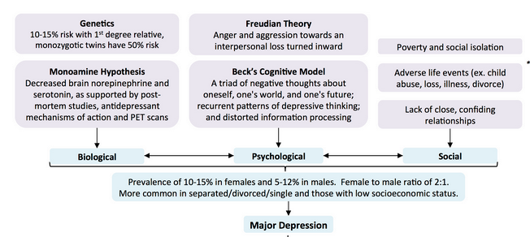
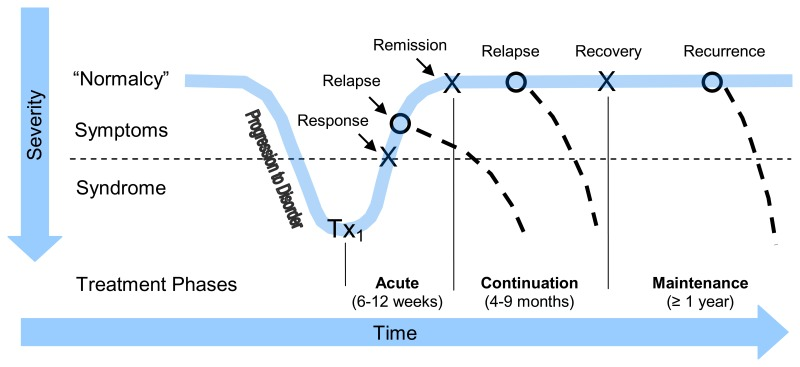

Chapter 5: The patient who is depressed
Screening, assessment and diagnosis
What is expected of a primary care clinician?
When to refer to a specialist?
Treatment - Non-pharmacological
Self directed learning material
Depression is a common disorder, yet detection, treatment and referral rates in primary care are low. Many patients with depression also have a medical condition, whose outcome can worsen if the depression is not treated. Given the recurring nature of depression, clinicians must know how to diagnose and manage depression, which includes providing follow-up and teaching patients self-management.
Pathogenesis
|
⚠️ |
While information presented is more detailed that is expected of a primary care clinician, it is intended that using depression as a prototypical disorder, we want to emphasize the brain based nature of psychiatric illnesses. |
1. Biopsychosocial model of Depression

2. How do the bio-psycho-social factors interact with each other?

3. How does stress get under the skin?
Brain is the primary organ of stress response, mediated through the HPA axis and ANS. These systems interact with the immune system by releasing pro-inflammatory cytokines. Interested students can read further here.

Once in the brain, the inflammatory response can affect metabolic and molecular pathways influencing neurotransmitter systems that can ultimately affect neurocircuits that regulate behaviour, especially behaviours relevant to decreased motivation (anhedonia), avoidance and alarm (anxiety), which characterize several neuropsychiatric disorders including depression. Interested students can read further here. While there are several hypothesis under evaluation the monoamine hypothesis postulates that abnormal levels of serotonin are implicated in the pathogenesis of depression.
4. Brain systems neurobiology in depression (Adapted from Psychiatry for beginners by Gupta et al)
- Stress activates the HPA axis
- HPA stimulation results in release of cortisol
- Cortisol stimulates the amygdala
- However, cortisol also activates the hippocampus, which sends inhibitory signals to HPA axis
- Emotional self regulation (by action of the prefrontal and limbic areas) also regulate the activity of the HPA axis
- Relative activity of these areas decides the activity of the HPA axis that is responsible for subsequent processes, like changes in neurotransmission, neuronal damage and release of inflammatory markers
- High activity of the HPA axis causes neuronal damage in hippocampal area. It results in the loss of hippocampal volume and, at the functional level, reduces control over the activity of the HPA axis. Similar neuronal damage has also been observed in the prefrontal cortex during high activity of the HPA axis.
Neuronal circuits in depressive disorders. dlPFC, dorsolateral prefrontal cortex; vmPFC, ventromedial prefrontal cortex; HPC, hippocampus; AMG, amygdala; PVN, paraventricular nuclei; PIT, pitutary; AdCo, adrenal cortex; IHb, lateral hebenula; RN, raphe nuclei; VTA, ventral tegmental area; SN, substantia nigra; NAcc, nucleus accumbens; CN, caudate nucleus.
- To master a stressful situation, we have two distinct but interacting circuits in the brain.
- First, the ventral circuit regulates emotions and it includes amygdala, ventral striatum, anterior hippocampus, insula, subgenual anterior cingulate cortex and orbito–frontal cortex;
- Ventral pathway is instrumental in dealing with emotional stimuli, providing them an emotional salience and autonomic regulation,
- Second, the dorsal cognitive circuit includes posterior hippocampus, pregenual part of anterior cingulate cortex and dorsolateral prefrontal cortex
- the dorsal circuit is important in executive functioning, decision making, memory, attention, planning and, lastly, regulation of ventral circuit.
- However, in depression, because of low activity of the hippocampus (see above), activity of the dorsal circuit decreases, resulting in heightened activity in the ventral circuit. Thus, in depressive disorders, activity of the ventral circuit increases, whereas that of the dorsal circuit is diminished, resulting in mood (sadness, anxiety, depressive ruminations) and cognitive symptoms (eg, psychomotor retardation, apathy, attention and memory disturbances).
- Release of cortisol also reduces the dopamine release in nucleus accumbens, which receives dopaminergic fibres from ventral tegmental area (VTA) and is important for the feeling of reward. However, this reduction is seen only during pleasurable stimuli, but not during painful stimuli. This is why depressed patients do not have the feeling of pleasure, but have intact feelings of pain and punishment.
- Hebenula is also instrumental in this mechanism. Its activity is increased during stress that leads to enhanced appreciation of negative stimulus (via the activation of serotonergic neurons in the raphe nuclei (RN) that are supplied to amygdala), whereas reduced feeling of positive events via inhibition of VTA dopamine neurons that terminate in nucleus accumbens.
5. Role of Various Mono-aminergic neurotransmitters in depressive symptoms
6. Sleep architecture changes in depression?

Deep sleep (delta sleep, stages 3 and 4) is decreased in depression. Time spent in rapid eye movement (REM) sleep is increased and the onset of REM in the sleep cycle is earlier (decreased latency to REM).
7. Late-life depression and Deep White Matter Hyper-intensities

Late life depression and, to a greater extent, late onset depression in late life were characterised by more frequent and intense white matter abnormalities. In particular, the odds of having white matter changes were over 4 for late compared with early onset depression.
Screening, assessment and diagnosis
Patients with the following risk factors may be screened for major depressive episode (MDE):
- Chronic insomnia or fatigue
- Unexplained somatic symptoms
- Chronic medical illness
- Recent cardiovascular event (myocardial infarction, stroke)
- Recent trauma (psychological or physical)
- Other psychiatric disorder
- Family history of mood disorder
- Extensive use of the medical system ("thick chart" syndrome)
- Post partum state
Two-question quick screen for core symptoms of depression
Use the two-question "quick screen" for patients with risk factors for major depressive episode (MDE). Ask:
- Have you felt sad or depressed?
- Have you lost interest in previously pleasurable activities?
Answering "yes" to either question indicates the need for a more detailed assessment.
How to ask for symptoms if screens on above questions
|
|

|
❗ |
Rule out bipolar disorder by asking for history of previous manic or hypomanic episodes |
Case vignette A 27-year-old female presented with complaints of sadness of mood for the past 1 month. She reported that she has lost interest in all the activities that were previously pleasurable to her. She now feels sad for most of the day and is not able to perform her duties. She has noticed a reduction in sleep with multiple nocturnal awakenings. Sometimes, she wakes up early in the morning, way ahead of her usual waking time and then she is unable to fall asleep. She has lost her appetite since 1 month and now she does not feel like eating. She also reported a change in her thoughts in a way that she had developed a negative approach towards life. Her thoughts are often pessimistic and prevent her from starting any new work. She often feels helpless and as if she has been trapped inside a cocoon, which she would never be able to break. She also had a similar episode 3 years back that responded well to the pharmacological treatment. General physical examination did not add anything to the diagnosis. On mental status examination, she showed psychomotor retardation, slow speech, short answers, sad mood and affect along with depressive thoughts. Based on the history and examination, a diagnosis of major depressive disorder with recurrent episodes, currently major depressive episode was made and treatment was started.
Depression : Differential Diagnosis

- Organic conditions - Many medical illnesses (as shown in the figure above) can cause depressive symptoms, but they generally have other symptoms and signs associated with the primary disease. Unless indicated by history and/or physical examination, screening blood tests need only include complete blood count and thyroid stimulating hormone test (to rule out anaemia and thyroid disease). Patients who take certain medications or who use alcohol or other drugs can present with depressive symptoms. Further laboratory and radiological testing may be indicated based on review of medical history and physical examination findings.
- Major Depressive Episode = 5 / 9 [at-least 1 core symptom] + all three D’s
- Three D’s
- D – Duration – at-least x 2 weeks [symptoms persist almost every day]
- D – Distress or Dysfunction – Should cause impairment in social, occupational or other areas of functioning [effect of illness on life]
- D – Differential [rule out]
- a. not due direct effect of a substance or another medical condition
- b. not better explained by schizoaffective disorder, schizophrenia, schizophreniform disorder, delusional disorder, or other specified and unspecified schizophrenia spectrum and other psychotic disorders
- c. no h/o manic or hypomanic episode
- Subtypes of MDD
- With anxious distress - co-morbid anxiety
- With mixed features - co-morbid manic symptoms
- With catatonic features - co-morbid catatonic features described in chapter 3
- Melancholic depression - Severe loss of pleasure and loss of reactivity of mood
- Atypical depression - Mood remains reactive with reverse vegetative symptoms
- Psychotic depression - with delusions and hallucinations
- Seasonal depression - worse in winter; light therapy is effective for seasonal affective disorder
- Post partum depression - Most new mothers experience post-partum "baby blues" after childbirth, which commonly include mood swings, crying spells, anxiety and difficulty sleeping. Baby blues typically begin within the first two to three days after delivery, and may last for up to two weeks. But some new mothers experience a more severe, long-lasting form of depression known as post-partum depression. Post-partum depression may be mistaken for baby blues at first — but the signs and symptoms are more intense and last longer, and may eventually interfere with your ability to care for your baby and handle other daily tasks. Symptoms usually develop within the first few weeks after giving birth, but may begin earlier ― during pregnancy ― or later — up to a year after birth.
- Persistent depressive disorder - as shown in figure above - less severe depressive symptoms for 2 years, more treatment-resistant
- Grief and major psychosocial stressors (adjustment disorders) - Major depressive episode (MDE) can be differentiated from bereavement by the severity of symptoms (e.g., psychosis or suicidality), the presence of anhedonia (total loss of feelings of pleasure) and the duration of impairment (longer than two months). Adjustment disorders have sub-syndromal number and severity of symptoms compared to MDE. Watchful waiting may be helpful to determine whether symptoms of adjustment disorder worsen or persist into a depressive episode.
- Bipolar disorder - prior periods of elevated mood, increased energy, decreased need/desire to sleep, grandiosity.
- Anxiety disorder - Depression is often secondary to, or co-morbid with, many anxiety disorders, especially generalized anxiety disorder, social anxiety disorder and panic disorder.
- Personality disorder (especially Cluster B) - Personality disorders usually present with lifelong patterns of mood instability.
- Special types of depressive disorders
- DMDD - Disruptive mood dysregulation disorder - individual b/w 6-18yrs have significant temper outbursts out of proportion to context; at least 3 times a week for 1 year; And mood stays persistently irritable or angry most of the day
- PMDD - Premenstrual dysphoric disorder - Onset of significant mood and physical symptoms in the week prior to menstruation, and symptoms improve within a few days of onset of menstruation; symptoms must be present during at-least two cycles
- Epidemiology, Course and Prognosis of Major Depressive Disorder
- In the general population of Western countries 5-12% in males and 10-26% in females.
- Age of onset: On average, around the late 30s. However, it can start anywhere from childhood to old age.
- More commoner in females
- Course of major depressive disorder is variable. Some patients have just one episode, whereas others may have recurrent episodes.
- Each episode increases the chances of having subsequent episode and poor response to therapy. Hence, each episode must be treated energetically.
What is expected of a primary care clinician?
- Diagnose and develop a treatment plan.
- Assess suicide risk.
- Monitor response and outcome using rating scales:
- The Patient Health Questionnaire (PHQ-9) is brief and patients can complete it at home or in the waiting room. It is also useful as a diagnostic aid and to identify remission status.
- Full remission of symptoms is an important goal for acute and maintenance treatment.
- Coach self-management and use problem-solving therapy techniques.
- Manage medications:
- Be familiar with at least two classes of antidepressants.
When to refer to a specialist?
- Complicating co-morbidity (substance abuse, personality disorder, anxiety disorder, compromised organ function, on treatment with blood thinners)
- Severe presentation (serious suicidality, psychosis, bipolar disorder, especially bipolar I, with manic episodes)
- Diagnostic clarification (bipolarity, personality disorder co-morbidity)
- Not improving with standard treatment
Treatment: Pharmacological

Acute treatment
The goals for acute treatment of depression are full remission of symptoms and return to baseline function. Remission is defined as having normal mood and minimal symptoms. It is best evaluated using a rating scale (e.g., a score within the normal range on the Patient Health Questionnaire [PHQ-9]). Antidepressant medications are first-choice treatments, especially for moderate to severe depression. Hospitalization may be required if pt posed a high suicide risk to self.
The newer antidepressants (selective serotonin reuptake inhibitors [SSRIs], bupropion, mirtazapine and venlafaxine) are first-line medications that are more tolerable and safe than tricyclic antidepressants (TCAs) and monoamine oxidase inhibitors (MAOIs).
Maintenance treatment
The goal for maintenance treatment of depression is preventing relapse and recurrence.
- Except for those with risk factors, patients should continue on antidepressants for at least six to nine months after achieving remission.
- Patients with risk factors (chronic, recurrent, severe or difficult-to-treat depressive episodes) should continue on antidepressants for at least two years. Some patients will require lifetime treatment.
Prescribing an antidepressant medication
Usually there is not one definite choice of antidepressant for any given patient because there is so much individual variability in efficacy and side-effects. The choice is based primarily on individual profiles of efficacy, tolerability and anxiety indications.
1st Line antidepressants
A. SSRI's - Selective Serotonin Reuptake Inhibitors e.g. Fluoxetine, Escitalopram, Sertraline, Paroxetine
B. SNRI's - Serotonin and Norepinephrine Reuptake Inhibitors e.g. Venlafaxine, Desvenlafaxine and Duloxetine
C. Novel actions drugs - Mirtazapine, Bupropion, Trazodone
2nd Line Antidepressants
A. TCAs - Tricyclic Antidepressants - e.g . Imipramine, Amitriptyline, Clomipramine, Nortriptyline
C. MOAI - Monoamine oxidase inhibitors - e.g. Phenelizine, Tranylcypromine
Use drug interaction checker to avoid potential drug-drug interactions.
Table: Commonly used antidepressants
|
Name |
Dose |
Common Adverse Effects |
|
Imipramine |
25-150mg/day |
Anticholinergic, sedation |
|
Fluoxetine |
20-80mg/day |
Anxiety, reduced appetite, delayed ejaculation, GI |
|
Escitalopram |
10-20mg/day |
Anxiety, reduced appetite, delayed ejaculation, GI |
|
Sertraline |
50-200mg/day |
Anxiety, reduced appetite, delayed ejaculation, GI |
|
Bupropion |
150-450mg/day |
Seizures |
|
Mirtazapine |
15-60mg/day |
Sedation, increased appetite |
Choosing the right medication

Managing no response to treatment
When the patient does not respond to the medication, options include the following:
- Check diagnosis: Any bipolarity, missed co-morbidity such as substance abuse?
- Optimize the antidepressant: Increase to maximum tolerable dose within dose range, ensure adherence for at least several weeks, manage side-effects.
- Switch to another antidepressant: There is no difference between switching within the same class of first-line antidepressants (e.g., SSRI to another SSRI) or to a different class (SSRI to venlafaxine or bupropion). After switching antidepressant and titrating to a therapeutic dose, assess over 3–4 weeks.
- Combining two antidepressants and use of augmenting agents should be done by taking consultation of specialist.
Providing psycho-education about medication
Use simple messages to help patients adhere to their medications:
- "Antidepressants have a lag time of two to three weeks to response."
- "Take your medications daily."
- "Side-effects are usually mild and temporary."
- "Continue on medications for at least six months, even after you feel better, or symptoms may return."
- "Do not stop antidepressants before checking with your doctor."
Advice on stopping medications
- "If you need to stop antidepressants, stop gradually over a four-week period to avoid discontinuation symptoms e.g. anxiety, giddiness, flu like symptoms, low mood, nausea, insomnia."
|
⚕️ |
Special treatments for depression that are offered by specialists |
|
Ketamine There are several contexts within this diagnostic framework when a ketamine trial may be considered. These include severe depression and depression that is refractory to conventional antidepressant medication. More importantly, ketamine has demonstrated efficacy in the rapid reduction of suicidal symptoms and can therefore be trialled when rapid reduction in suicidality is necessary. Likewise, because of its swift and dramatic antidepressant action, it can be trialled in patients in whom improvement is urgently desired in order to allow the patient to attend to pressing life circumstances. ECT
|
|
Treatment: Non-pharmacological
General advise to all patients
- A healthy diet
- Regular exercise
- Sleep hygiene
- Contact for support in crisis
Self-management approaches
- Education about depression - use written handouts prepared in local language
- Involve patients in managing their illness by actively collaborating with them in diagnosis and treatment planning.
Psychotherapy
- The choice of psychotherapy depends on the availability of local resources.
- Evidence-based psychotherapy approaches include:
- Problem-solving therapy: Four to six weekly sessions with a focus on identifying problems and simple problem-solving techniques, useful in primary care.
- Cognitive-behavioural therapy: 12 to 16 weekly sessions with a focus on identifying negative cognitions and behaviours, substituting more realistic thinking and behavioural activation.
- Interpersonal therapy: 14 to 16 weekly sessions with a focus on identifying and dealing with interpersonal conflicts and problems
Self directed learning material for the depressed patient
1. Psychiatric interview of teaching depression
2. A patient discussing with her GP about post partum depression
3. ADMSEP self directed learning module on "Depression" Link
4. Brain-based nature of depression and mechanism of action of antidepressants
Bibliography
1. Portico network - Psychiatry in Primary Care Toolkit
2. Black Book - University of Calgary
3. Gartlehner G, Gaynes BN, Amick HR, et al. Non-pharmacological Versus Pharmacological Treatments for Adult Patients With Major Depressive Disorder [Internet]. Rockville (MD): Agency for Healthcare Research and Quality (US); 2015 Dec. (Comparative Effectiveness Reviews, No. 161.)
4. Synopsis of Psychiatry 11e.
5. Gulati, Gautam; Cullen, Walter; Kelly, Brendan. Psychiatry Algorithms for Primary Care (p. 32). Wiley. Kindle Edition.
6. thecalgaryguide.com
7. ADMSEP modules
8. University of Nottingham teaching videos
9. Mastering Psychiatry 2016e.
10. Andrade C. Ketamine for Depression, 2: Diagnostic and Contextual Indications. J Clin Psychiatry. 2017 May;78(5):e555-e558. doi: 10.4088/JCP.17f11629. PMID: 28570803.
11. Front. Psychol., 21 November 2018 | https://doi.org/10.3389/fpsyg.2018.02201
12. Oxford Handbook of Psychiatry 4e.
13. Miller AH, Raison CL. The role of inflammation in depression: from evolutionary imperative to modern treatment target. Nat Rev Immunol. 2016 Jan;16(1):22-34,
14. Irwin MR, Cole SW. Reciprocal regulation of the neural and innate immune systems. Nat Rev Immunol. 2011 Aug 5;11(9):625-32.
15. Steiger A, Pawlowski M, Kimura M. Sleep electroencephalography as a biomarker in depression. ChronoPhysiology and Therapy. 2015;5:15-25
16. Canadian Family Medicine Clinical Cards
17. GUPTA, RAVI. Psychiatry for Beginners - E-Book. Elsevier Health Sciences. Kindle Edition.
Created with the Personal Edition of HelpNDoc: Easily create iPhone documentation